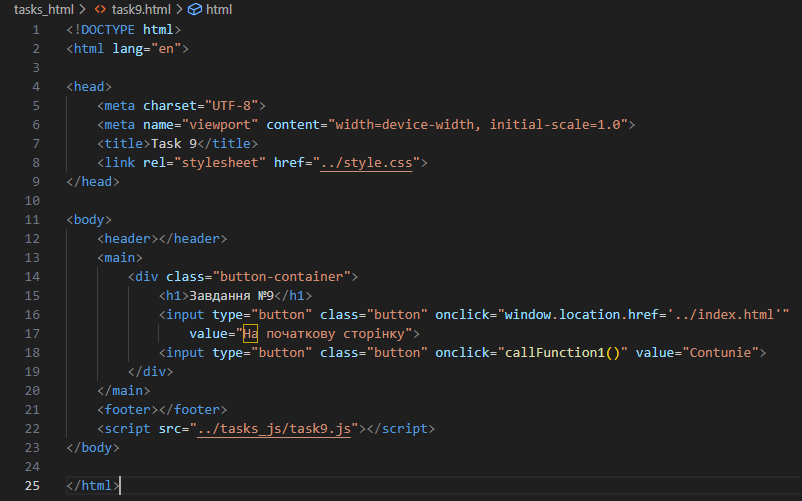
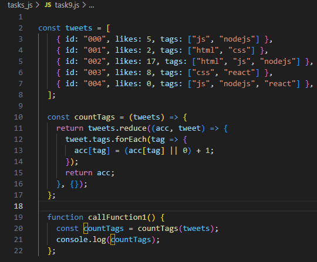
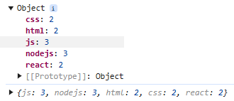

Завдання №5.9
HTML-код (task9.html)
JS-код (task9.js)
Результат виконання
Коментар до JS-коду
Код виконує завдання коректно, забезпечуючи підрахунок кількості використань кожного тегу у масиві твітів. Для цього використовується метод reduce, який дозволяє обробляти всі елементи масиву та поступово формувати об'єкт, що містить підсумкову інформацію про теги. Кожен об'єкт у масиві tweets містить властивість tags, яка є масивом тегів, пов'язаних із конкретним твітом. Метод reduce приймає два аргументи: акумулятор (acc), який зберігає об'єкт із підрахованими тегами, та поточний елемент масиву (tweet). Для кожного твіта метод forEach перебирає масив тегів. У цьому процесі перевіряється, чи тег вже існує в акумуляторі acc. Якщо він є, його значення збільшується на 1, інакше створюється новий ключ із початковим значенням 1.